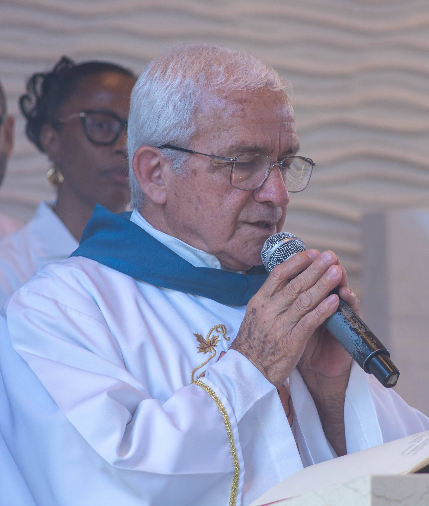

Matriz Nossa Senhora Aparecida
Domingo7h e 19h
Quarta-feira19h30
Sábado18h
Fazei O que Ele vos disser - João 2,5
Ver horários de Missas Como chegarPároco

Diácono
Fale com a secretaria paroquial, confira o endereço da Matriz e acesse os canais oficiais da paróquia.
Endereço: Av. Ipanema, 1.085 · Vila Angélica - Sorocaba/SP
WhatsApp: (15) 3223-3307
E-mail: par.aparecida.sorocaba@hotmail.com
Facebook: @Paróquia NSra Aparecida Sorocaba
Instagram: @paroquiaaparecidasorocaba
Twitter: @ParAparecidaSor